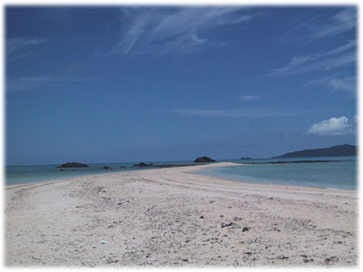
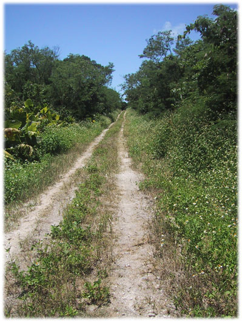
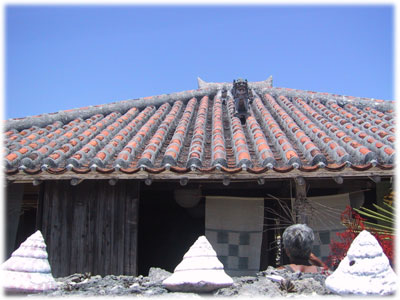

|
私が上野創記者と初めて会ったのは、９８年５月、彼が抗がん剤の大量投与を受けて、私の想像をはるかに超える苦痛と戦っている最中のことです。病室のベッドの上で、目のぎょろっとした青年が、髪の抜けた頭に毛布をかぶり、新聞をにらむように、ひとつひとつの文字を追っていました。
私は、彼が元気なころ極めて優秀な記者であることを知っていました。しかし、そこにいたのは、やせ衰え、どす黒い肌をし、気力だけで日々をかろうじて生き抜いている男でした。
彼は私が新しい上司だと知ると、病気のことも薬の副作用のことも、なにもいわずに、「新聞記者に戻りたいんです」とだけいいました。
新緑あふれる帰り道、私は「あの若い記者を病魔から必ず奪還してやる」と心に決めました。人間の奥底を見通すように鋭く、そして温かい目を持つあの記者と、ぜひいっしょに仕事をしたい。心からそう願いました。
その後、彼は２度の再発に見舞われ、消そうとしても消せない死への恐怖と戦い、体中を痛めつける副作用と戦い、そして自らの精神とさえ戦わざるを得ませんでした。長い長い戦いでした。
彼が先輩記者から、こうした闘病体験を書いたらどうかと勧められていたことは知っていました。しかし、私は何もいいませんでした。上司として指示する問題ではないと考えたのです。
２度目に再発した時、彼から連載を書きたいと相談がありました。考えに考えた末の思いだったのでしょう。「つらい作業になる。耐えられるか」との私の問いに、彼はひとこと「やります」と答えました。それから再び、彼の新しい戦い、自らの苦痛を追体験し、客観化し、再構成するという戦いが始まりました。
彼の努力は、朝日新聞の神奈川版での連載として結実し、掲載と同時に、驚くほどの反響をいただきました。私はそこで初めて、上野君の戦いは彼ひとりだけの戦いではなくなったと気がつきました。彼の文章に心を寄せていただいたすべての人との共闘が始まったのです。人々が彼を助け、彼が人々助ける。思えば人はすべてそういう関係です。
連載が本になりました。彼とともに助け合い、ともに戦う。そうした人々がさらに増えることを願うばかりです。
上野君と初めて会ってから約４年。いま彼は当時とは違う職場ですが、再び私の部下として、かつて以上に優秀な新聞記者として働いています。彼の願い、そして私の願いも達成されました。このことをここで報告できることは、なにものにも代え難い喜びです。
『がんと向き合って』エピローグに登場する竹富島の風景（撮影・上野創）



|